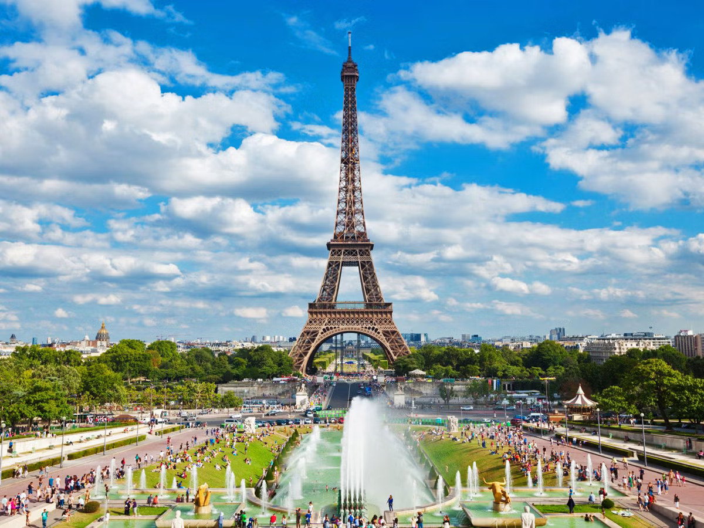
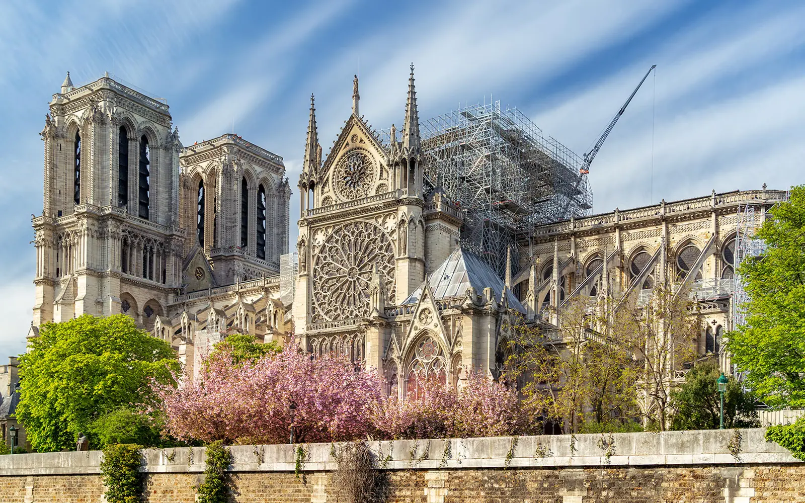
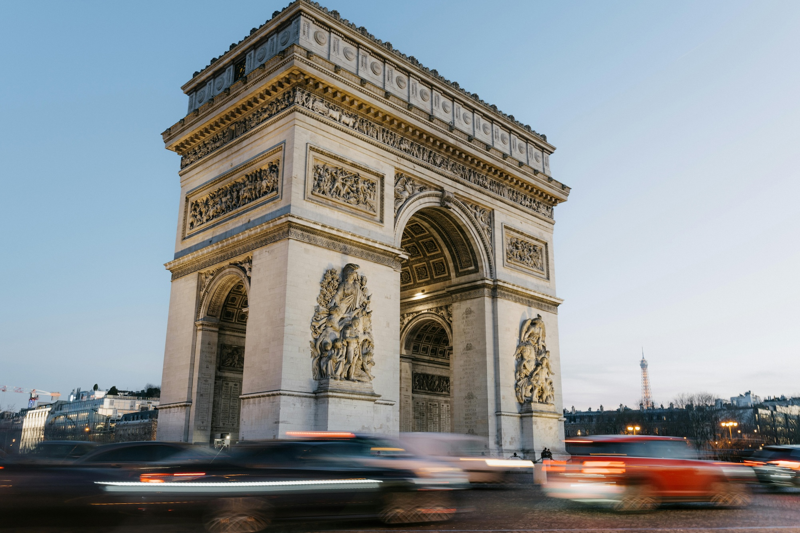
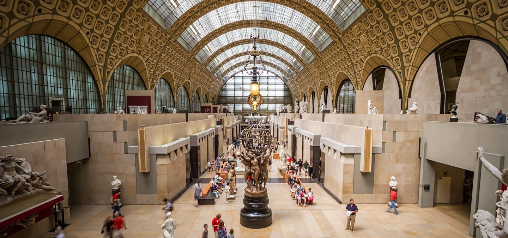
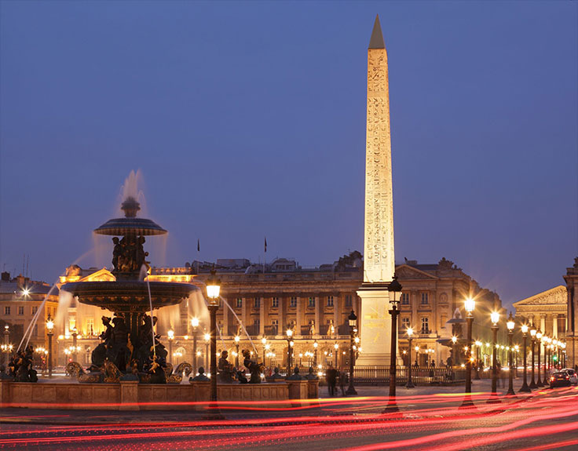

Things to see in Paris
The Eiffel Tower

The Eiffel Tower is Paris’s most iconic symbol and a must-see for any visitor.
Whether you admire it from the Champ de Mars, take an elevator ride to the top, or enjoy the sparkling lights at night, the experience is unforgettable.
Its panoramic views stretch across the entire city, making it the perfect introduction to Paris’s grand architecture and charm.
Notre Dame Cathedral

Notre-Dame stands as a masterpiece of Gothic architecture and a symbol of Parisian history.
Even after the 2019 fire, its intricate façade, famous gargoyles, and island location continue to draw visitors.
As restoration progresses, parts of the cathedral and surrounding areas remain open, offering a unique look into this cultural treasure’s resilience..
Arc De Triomphe

At the end of the Champs-Élysées rises the mighty Arc de Triomphe, built to honor those who fought for France.
Visitors can climb to the top for one of the best views of the city’s grand boulevards radiating outward in all directions.
Beneath the arch lies the Tomb of the Unknown Soldier, adding solemn historical significance to this impressive monument.
Musée D'orsay

Housed in a former railway station, the Musée d’Orsay features one of the world’s greatest collections of Impressionist and Post-Impressionist art.
Visitors can admire masterpieces by Monet, Van Gogh, Degas, and Renoir in a beautifully restored Beaux-Arts building.
Its size makes it easier to explore than larger museums, while still offering an exceptional artistic experience.
Champs-Élysées & Place de la Concorde

The Champs-Élysées is one of the world’s most famous avenues, known for its luxury shops, cafés, and lively atmosphere.
Strolling down the boulevard leads you directly to Place de la Concorde, a historic square featuring fountains, statues, and the striking Luxor Obelisk.
Together, they form a vibrant stretch of Paris that blends history, culture, and modern-day energy.